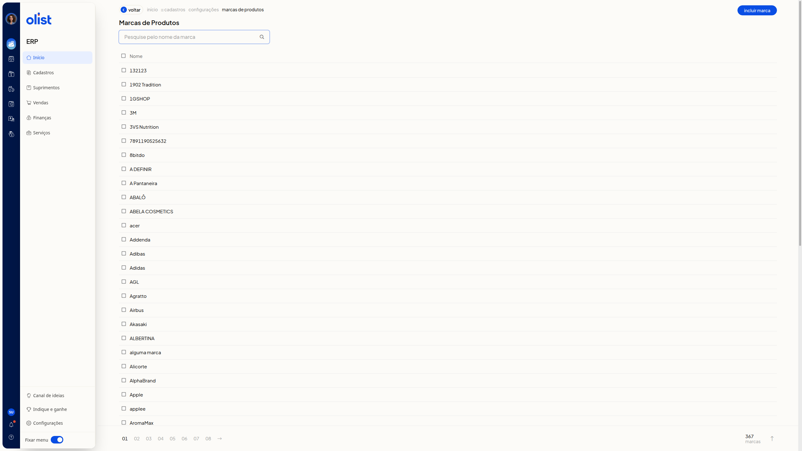
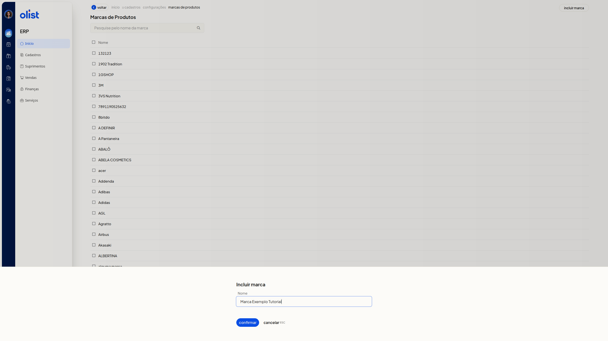
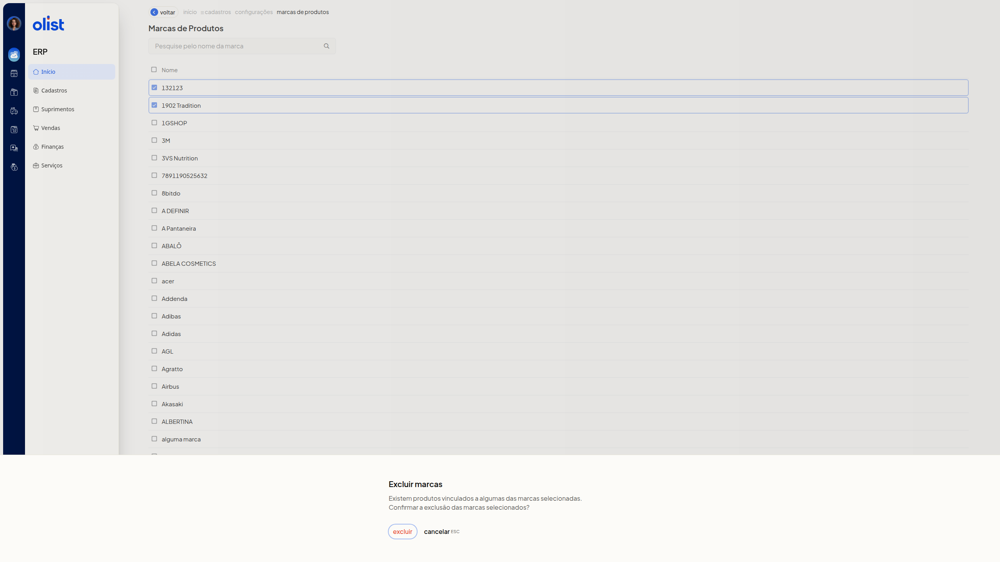

Marcas dos Produtos - Configurações
A tela Marcas de Produtos lista as marcas cadastradas dos produtos. Nela você inclui uma marca, altera o nome, unifica duas ou mais marcas e exclui as selecionadas. Na unificação, alguns dados dos produtos são atualizados com a nova marca unificada.
Importante
- Não é possível incluir ou alterar uma marca com o nome de outra marca já cadastrada.
- Não é possível unificar as marcas se a descrição informada já existir em uma marca que não foi selecionada.
- Incluir, alterar e unificar só seguem em Confirmar. A exclusão só segue em Excluir. Cancelar ESC fecha sem concluir a ação.
Como acessar
Acesse Início > Cadastros > Configurações > marcas de produtos.
Grupos de configuração
Marcas de Produtos
A lista reúne as marcas na coluna Nome, com uma caixa de seleção por linha. O campo Pesquise pelo nome da marca não é obrigatório. Use-o para localizar uma marca pelo nome. Incluir marca fica no topo da lista. A lista tem paginação e o rodapé mostra o total de marcas.

Ao marcar caixas de seleção, a lista mostra a contagem da seleção, o botão Unificar marcas e Mais ações. Em Mais ações estão Unificar marcas e Excluir marcas.
Incluir marca
Incluir marca reúne o campo Nome. O campo não é obrigatório.
-
Clique em Incluir marca.
-
Preencha Nome.

-
Clique em Confirmar para incluir a marca. Para sair sem incluir, clique em Cancelar ESC.
Alterar marca
Alterar marca reúne o campo Nome, já preenchido com o nome atual. O campo não é obrigatório.
-
Na coluna Nome, clique no nome da marca.
-
Confira Nome.
-
Ajuste Nome, se precisar, e clique em Confirmar para alterar a marca. Cancelar ESC fecha sem alterar a marca.
Unificar marcas
Unificar marcas reúne o aviso de atualização dos produtos e o campo Descrição. O campo não é obrigatório e já vem preenchido.
-
Marque a caixa de seleção das marcas. A lista mostra a contagem da seleção, Unificar marcas e Mais ações.
-
Se só uma marca estiver marcada, clique em Unificar marcas. A tela exibe Selecione pelo menos duas marcas para unificar e não abre o formulário. Clique em Fechar ESC para fechar o aviso.
-
Com duas ou mais marcas, clique em Unificar marcas no botão da seleção ou em Mais ações.
-
Leia o aviso e ajuste Descrição, se precisar. O aviso informa que alguns dados serão atualizados com a nova marca unificada (produtos).

-
Clique em Confirmar para unificar as marcas. Cancelar ESC fecha o diálogo e mantém as marcas selecionadas.
Excluir marcas
Excluir marcas pede confirmação antes de excluir as marcas selecionadas.
-
Marque uma ou mais marcas na lista.
-
Clique em Mais ações e escolha Excluir marcas.
-
Leia o aviso. O diálogo informa que existem produtos vinculados a algumas das marcas selecionadas e pede a confirmação da exclusão.

-
Clique em Excluir para excluir as marcas selecionadas. Cancelar ESC fecha o diálogo sem excluir.
Perguntas frequentes
Posso incluir ou alterar uma marca com um nome já cadastrado?
Não. Não é possível incluir ou alterar uma marca com o nome de outra marca já cadastrada. Informe outro nome.
Posso unificar com uma descrição que já existe?
Não, se a descrição já existir em uma marca que não foi selecionada. Ajuste Descrição para um texto que não pertença a uma marca de fora da seleção.
O que a unificação atualiza nos produtos?
Alguns dados são atualizados com a nova marca unificada (produtos).
Quantas marcas preciso marcar para unificar?
Pelo menos duas. Com uma marca, a tela exibe Selecione pelo menos duas marcas para unificar e não abre o formulário.
Links relacionados
Se precisar de ajuda com as marcas dos produtos, fale com o suporte.